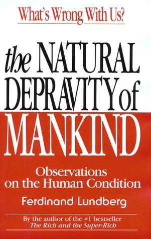
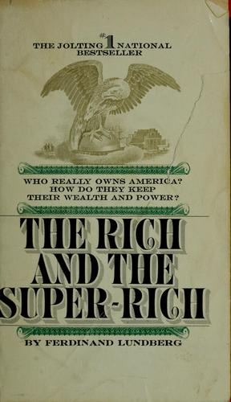
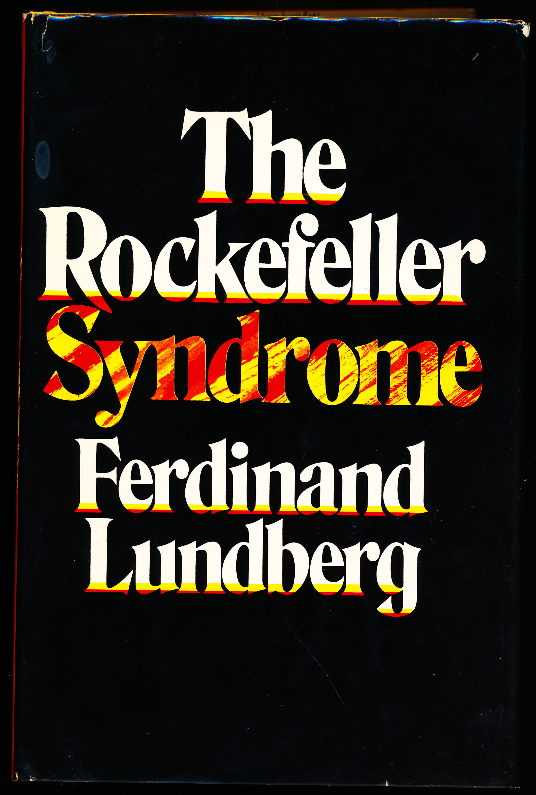
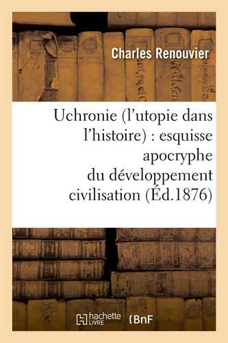

15:53 · 4 OPERE
Recensione ad un libro di Ferdinand Lundberg
Il filo del discorso
La recensione di The Natural Depravity of Mankind diventa un invito a rileggere Ferdinand Lundberg come osservatore della concentrazione della ricchezza e del potere negli Stati Uniti. Dr Divago presenta il volume del 1994 come una sintesi di interessi sviluppati anche in The Rich and the Super-Rich e in The Rockefeller Syndrome. Prima di entrare nei temi del libro, si sofferma sul linguaggio della discussione economica: secondo lui, il termine capitalismo viene spesso impiegato per classificare immediatamente chi parla dentro uno schieramento. L’esempio di un accumulo smisurato di cioccolata, attribuito a John Cleese, serve a interrogare la normalizzazione della ricchezza estrema. Il relatore valorizza poi l’indignazione e l’indipendenza di Lundberg e propone di estenderne alcune osservazioni dalla società americana a quella italiana. Corruzione, controllo dei cittadini e distanza fra forme democratiche e potere effettivo costituiscono il nucleo politico della lettura. Il richiamo all’ucronia introduce una discussione del ruolo di Woodrow Wilson e delle alternative storiche possibili. La conclusione torna al libro recensito, raccomandato come occasione per un confronto pubblico su idee, ricchezza e responsabilità. I giudizi sulle istituzioni e sull’autoritarismo delle società contemporanee rimangono valutazioni del relatore.
I libri nel discorso

The Natural Depravity of Mankind. Observations on the Human Condition
Copertina: Barricade Books · 1994
Immagine autentica dell’opera, controllata visivamente; l’edizione di riferimento non è attribuita al filmato.
Autore e titolo del volume recensito sono annunciati all’inizio e ripresi nella conclusione.
Passaggio 0:04 ↗ · Fonti e libro ↗
The Rich and the Super-Rich (Ricchi e straricchi)
Copertina: Bantam Books · edizione inglese di riferimento
Copertina autentica dell’esemplare inglese Bantam catalogato da OpenLibrary e Internet Archive, con autore e titolo leggibili. L’anno della specifica ristampa non è assegnato in presenza di indicazioni discordanti. L’originale Lyle Stuart del 1968 e la traduzione Feltrinelli Ricchi e straricchi del 1969 sono dati bibliografici distinti.
Sono pronunciati il titolo inglese, la traduzione Feltrinelli e la data 1969; il titolo italiano catalogato è Ricchi e straricchi.
Passaggio 0:59 ↗ · Fonti e libro ↗
The Rockefeller Syndrome
Copertina: Lyle Stuart · prima edizione, 1975
Fotografia autentica della sovraccoperta nera, titolo e autore in bianco con ombre rosse e gialle, dall’esemplare Alkahest Books. Catalogo e fotografia concordano per autore, titolo, editore e ISBN; la legatura gialla senza titolo non è stata utilizzata.
Il relatore nomina la Sindrome di Rockefeller come altra opera di Lundberg.
Passaggio 7:55 ↗ · Fonti e libro ↗
Uchronie (L’utopie dans l’histoire)
Identificazione probabile
Copertina: Hachette Livre–BnF · ristampa 2012 del testo del 1876
Copertina autentica della ristampa patrimoniale Hachette Livre–BnF del 2012, ISBN 9782012630390. La grafica con libri antichi appartiene alla copertina moderna del volume stampato su richiesta, non all’edizione ottocentesca.
Un autore francese dell’Ottocento e il titolo Uchronie suggeriscono Renouvier; il nome non è pronunciato.
Passaggio 10:51 ↗ · Fonti e libro ↗